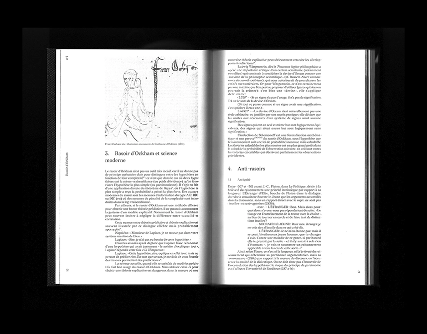
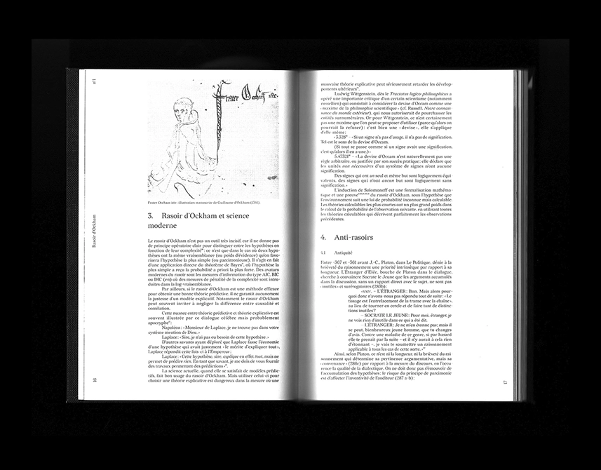
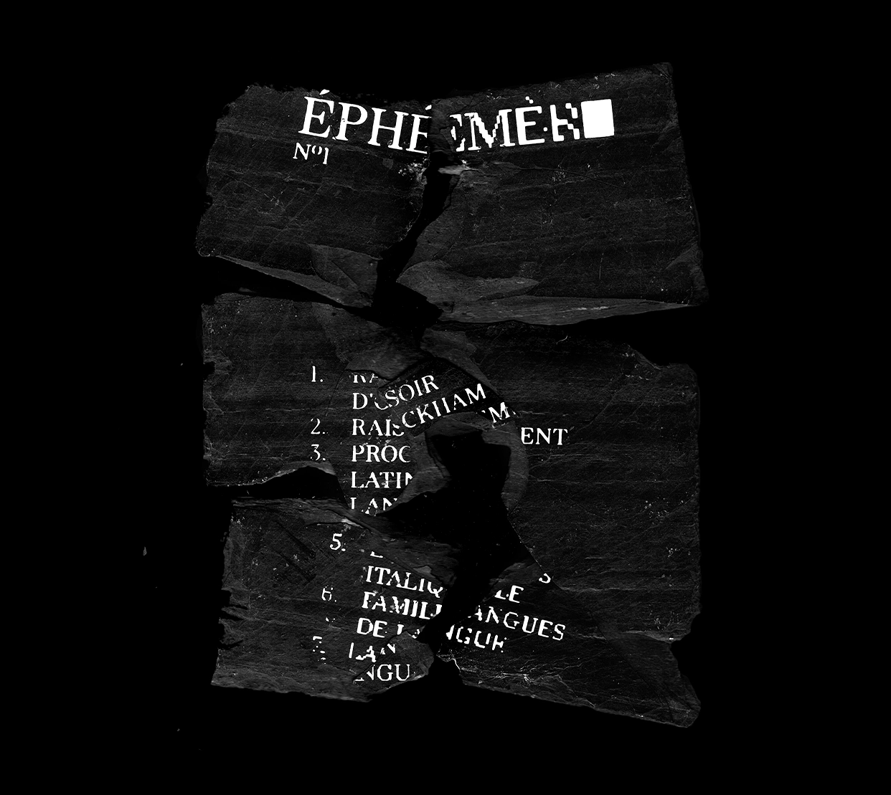
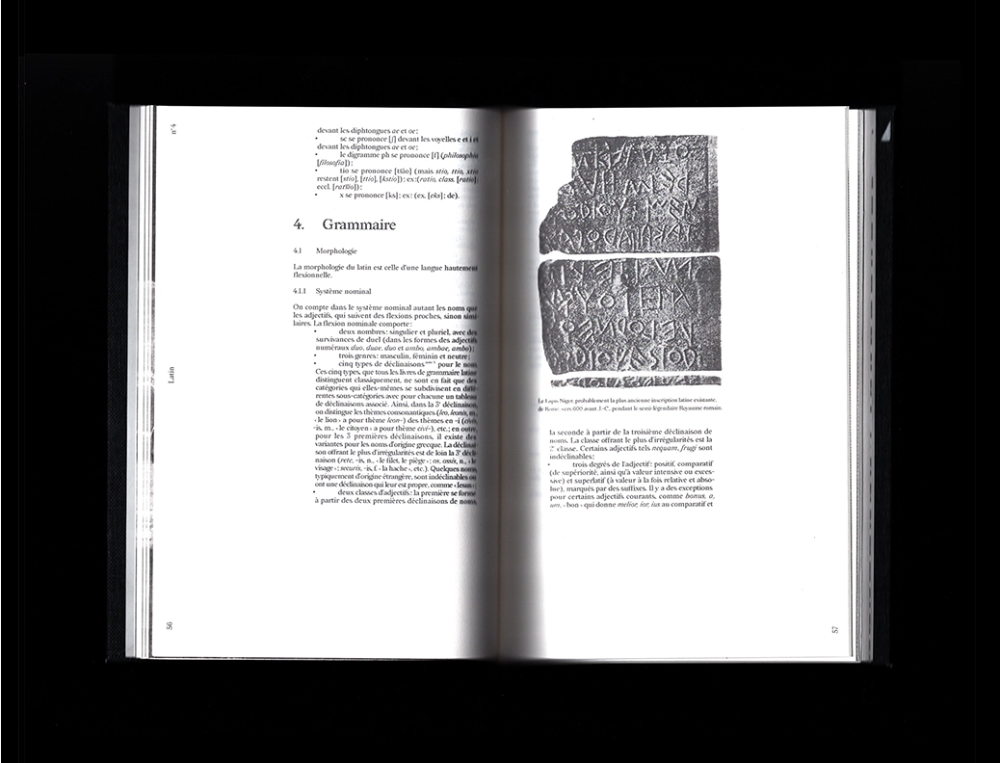
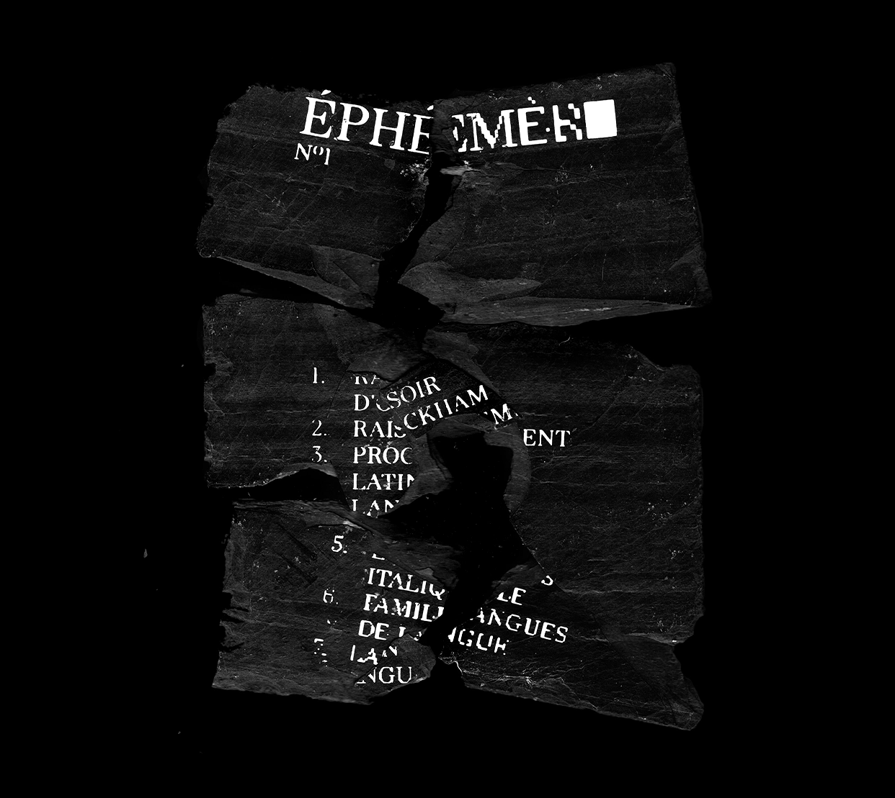
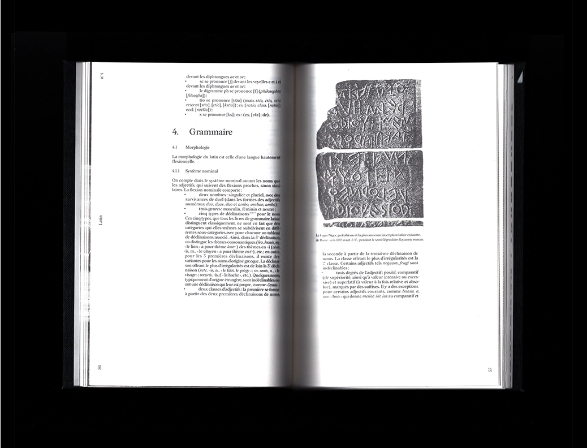
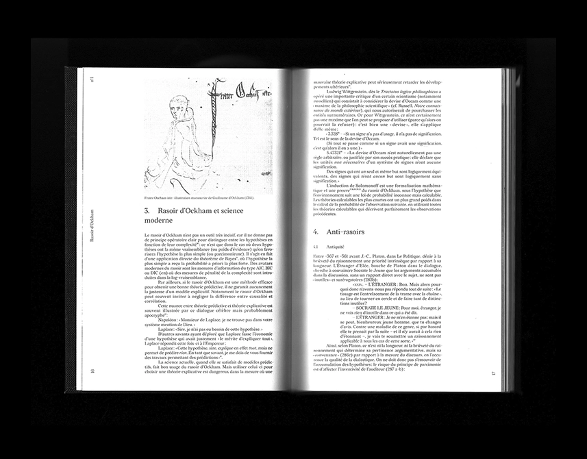
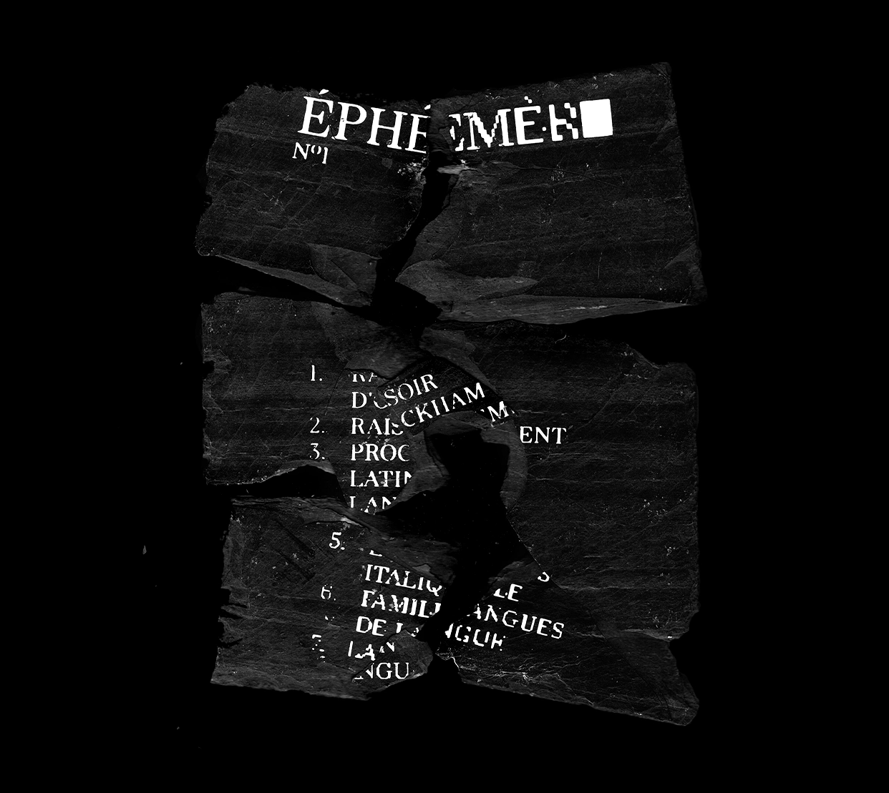
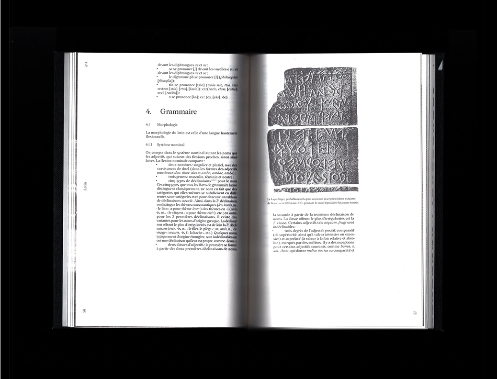

 





✷ Éphémère, concept éditorial, 160 × 240 mm, couverture : papier tissé gris anthracite, intérieur : papier croquis Canson 90 g, couverture et marques pages sérigraphiés, 2021.
« La ‹ pollution lumineuse › émise par les luminaires du Pont-canal de Briare sur la Loire attire des milliers d'éphémères. Les femelles ont ici pondu sous
les luminaires (points jaunes) et de nombreux éphémères ont été piégés par les toiles d'araignées. Le matin des guêpes y viennent – parfois par centaines –
‹ voler › aux araignées une partie des cadavres d'insectes qu'elles ont tué et emballé dans un fourreau de soie la nuit. Ce phénomène est à la fois un
exemple de ‹ puits écologique › et de piège écologique. » — Wikipédia.
Éphémère est un projet de cours d'édition où il nous était demandé de produire une édition à partir d'articles issus de Wikipédia. J'ai choisi de travailler
autour de la prolifération d'informations sur internet et les utilisations que l'on fait de ces connaissances. Wikipédia est une ressource riche mise à la
disposition de tous. Mon protocole commence avec un article, ici le Rasoir d'Ockham. Je décide, ensuite, de cliquer sur le premier lien disponible dans chaque
article et cela 6 fois de suite. Bien que lié par le protocole, cet ensemble d'articles perd de pertinence en rapport au premier sujet. De ‹ Rasoir d'Ockham ›
jusqu'à ‹ Langues ›, la dégradation de l'information se retrouve également dans la mise en page. Le texte se pixélise de plus en plus, le blanc prend de plus
en plus de place. La lecture devient de plus en plus compliquée. Viens alors la question de la pollution lumineuse qui guide nos quotidiens et à laquelle on se laisse piéger.
✷ Éphémère, editorial concept, 160 × 240 mm, cover: woven paper gris anthracite, interior: sketch paper Canson 90 g, cover and bookmarks screen printed, 2021
"The 'light pollution' emitted by the lights of the Briare bridge-canal on the Loire attracts thousands of mayflies. The females here have laid
their eggs under the lights (yellow dots) and many mayflies have been trapped by the spider webs. In the morning wasps come here — sometimes by
the hundreds — to 'steal' from the spiders some of the insect corpses that they have killed and wrapped in a silk sheath at night. This phenomenon
is both an example of an 'ecological sink' and an ecological trap." — Wikipedia.
Éphémère is an editorial course where we were asked to produce an edition based on articles from Wikipedia. I chose to work around the proliferation
of information on the internet and the uses we make of this knowledge. Wikipedia is a rich resource available to everyone. My protocol starts with
an article, here Ockham's Razor. I decide, then, to click on the first available link in each article and this 6 times in a row. Although linked by the protocol,
this set of articles loses relevance to the first topic. From 'Ockham's Razor' to 'Languages', the degradation of the information is also found in the layout.
The text becomes more and more pixelated, the white takes more and more space. The reading becomes more and more complicated. Then comes the question
of the light pollution which guides our daily life and to which we let ourselves be trapped.


